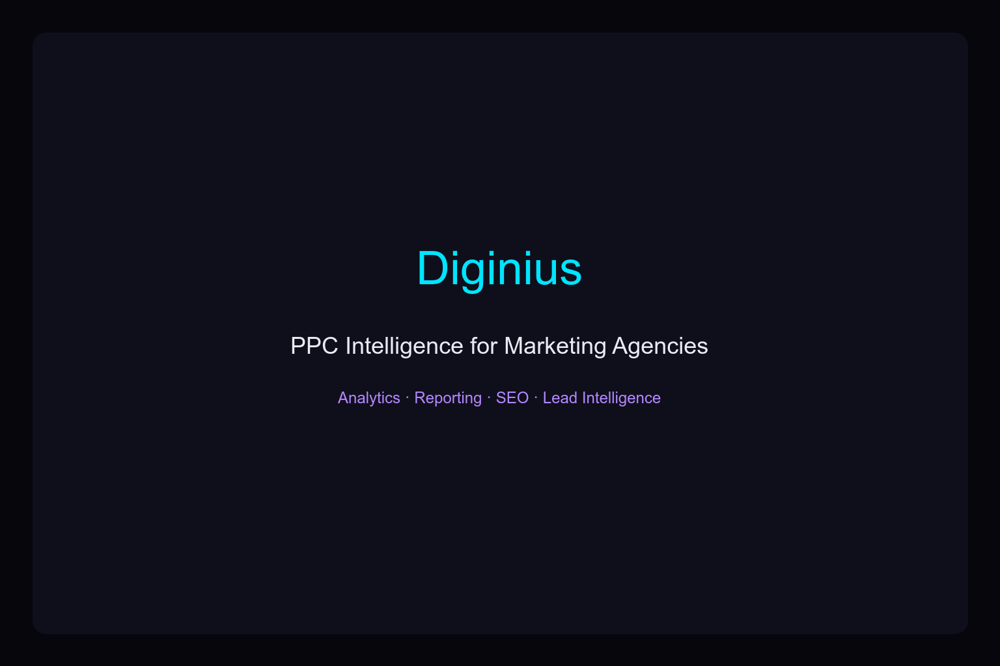

What Is Diginius?
Diginius Insight is a digital marketing intelligence platform designed primarily for PPC agencies and businesses running paid advertising across multiple channels. The platform aggregates data from Google Ads, Microsoft Advertising (Bing Ads), Facebook, and LinkedIn into a single dashboard, giving marketers a unified view of their advertising performance without constantly jumping between platforms.
Founded to solve the chaos of multi-channel PPC management, Diginius positions itself as the bridge between raw advertising data and actionable insights. Rather than replacing your existing ad platforms, it sits on top of them — pulling in spend, clicks, conversions, and ROI metrics so you can compare performance side by side.
For marketing agencies juggling dozens or hundreds of client accounts, this kind of consolidation is genuinely valuable. The alternative is manually exporting reports from each platform, stitching them together in spreadsheets, and hoping you catch anomalies before your clients do. Diginius eliminates that friction entirely.
Key Features
Diginius packs a substantial feature set for a platform that most people still haven't heard of. Here's what stands out:
- Omni-Channel Ad Aggregation — Pull performance data from Google, Microsoft, Facebook, and LinkedIn into one dashboard. Compare metrics across platforms without manual reporting.
- White-Label Reporting — Generate client-facing reports with your agency's branding. Schedule automated email reports so clients stay informed without you lifting a finger.
- Lead Intelligence — Identify website visitors and understand buyer behavior. Useful for B2B agencies that want to know which companies are browsing their clients' sites before they ever fill out a form.
- SEO Management — Track keyword rankings, monitor site health, and analyze organic reach alongside paid performance. Having SEO and PPC data in one place reveals insights you'd miss looking at them separately.
- Proprietary Bidding Engine — An automated bidding tool that optimizes Microsoft Advertising campaigns. This is particularly interesting for agencies looking to diversify spend away from Google.
- Data Reconciliation — Creates a single source of truth by reconciling data across platforms. No more debating whether Google or Facebook's attribution numbers are "right."
- Microsoft Partner Program — Exclusive access to beta programs, financial incentives, and dedicated support for agencies running Microsoft Ads campaigns.
- Competitor Analysis — Monitor your competitive landscape in organic search and understand where you stand against rivals in your vertical.
Who Is Diginius For?
Diginius has two primary audiences, and the platform makes a clear distinction between them:
Marketing agencies are the core audience. If you manage PPC campaigns for multiple clients across several advertising platforms, Diginius was built with you in mind. The white-label reporting alone can save hours per client per month, and the centralized dashboard means your account managers can spot performance issues faster.
In-house marketing teams at businesses spending meaningful budgets across Google, Microsoft, and social channels will also find value. Especially if you're a B2B company that cares about lead intelligence — knowing which companies visited your site and what they looked at is a competitive advantage that most analytics tools don't offer out of the box.
It's less suited for small businesses running a single Google Ads campaign. The platform's strengths emerge when you're managing complexity — multiple channels, multiple accounts, multiple clients.
Pros & Cons
What We Like
- Truly unified cross-platform reporting — not just a dashboard that links out to other tools
- White-label reports look professional and save significant time
- Lead intelligence is a genuine differentiator, especially for B2B agencies
- Dedicated support specialists assigned to your team (not a generic help desk)
- Microsoft Partner Program offers real financial incentives for agencies
- SEO + PPC data in one platform reveals cross-channel insights
What Could Be Better
- Platform awareness is low — fewer third-party reviews and community resources compared to competitors
- Pricing is not publicly listed; requires contacting sales for a quote
- Primary strength is Microsoft Ads — if you're 100% Google, some features are less relevant
- Onboarding may take time given the breadth of features
- Limited integrations compared to larger platforms like Supermetrics or Funnel.io
Pricing
Diginius does not publish pricing publicly. This is common for platforms targeting agencies and enterprise clients — pricing typically scales based on the number of accounts, ad spend volume, and features needed.
To get accurate pricing, you'll need to schedule a demo or contact their sales team. Based on the platform's positioning and feature set, expect pricing to be competitive with other mid-tier PPC management platforms. For agencies managing significant ad spend, the time savings from automated reporting alone often justify the investment.
Pro tip: Ask about the Microsoft Partner Program during your sales call. The financial incentives and beta access can offset a meaningful portion of your subscription cost if you run Microsoft Ads campaigns.
Verdict
Diginius Insight fills a genuine gap in the market. Most PPC management tools focus heavily on Google Ads and treat everything else as an afterthought. Diginius takes the opposite approach — it treats all channels equally and gives you the tools to manage them cohesively.
The platform shines brightest for agencies that manage Microsoft Advertising alongside Google and social channels. The white-label reporting is polished, the lead intelligence feature is unique, and the Microsoft Partner Program offers tangible benefits you won't find elsewhere.
Is it perfect? No. The lack of public pricing, limited third-party integrations, and lower brand recognition are real considerations. But for agencies looking to differentiate themselves with better reporting and deeper insights, Diginius is worth a serious look — especially if Microsoft Ads is part of your mix.
If you're tired of manually stitching together reports from four different ad platforms, this is the kind of tool that pays for itself in recovered time within the first month.
Get Started with Diginius →